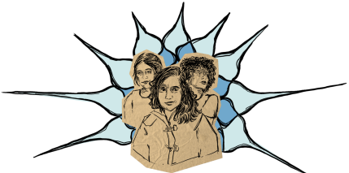

from a BOMB Magazine interview with Caledonia Curry, known as Swoon
Swoon
Caledonia Curry, known as Swoon, is a contemporary artist and filmmaker
recognized around the world for her pioneering vision of public artwork.
Best known as one of the first women Street Artists, Swoon re-envisions the
communities we live in towards a more equitable and hopeful future through
immersive installations and community-based projects.
the
INTERVIEW
This excerpt captures the last two qustions of Swoon's interview with Katie
Peyton from BOMB Magazine as they explore the artist's outlook on Hope within
her work.
Katie Peyton...
[…] Politically engaged art is often dystopian. When we’re surrounded by
artistic dystopias, a part of us starts getting used to it, and expecting it.
Dystopian art reflects our madness and problematic narratives back to us; it
draws attention to injustices we may be ignoring.
But we need narratives of
hope so we know what to ask for. We can only want what we can imagine.
...Swoon
"'We can only want what we can imagine' that's so true."
Katie Peyton...
You could’ve easily begun your career from a place of cynicism. But your
overall message is hopeful. We can do it better. This is better. As a socially
engaged artist, how do you hang onto hope?
...Swoon
The way that I personally maintain hope is to just keep fighting and keep working.

I’m tackling this problem; I’m in this conversation; I’m building this thing.
Early on, I knew that there were all these forces in the world, but I have picked
one, and I’m on the team, and I’m just going to row. I know what my team is, and
I just fucking row.
It becomes kind of a spiritual question.
You said I believe we are better. I’m trying to contact that within people,
because it’s always there. In Buddhism, it’s the part that becomes enlightened,
and that leads you to enlightenment. I really believe in that.
I feel it in myself, and I feel it in each person—that capacity to become enlightened.
Where is that capacity? I think glimmers of it gather around a few places inside us.
One of those places is our ability to feel wonder, and another is our ability to feel
compassion. Even in the face of the worst.I know sometimes that a more cynical
approach would be perhaps more acceptable in the art world (and that is how I make
my living). But choosing hope allows me to be in touch with myself and to not take
a posture.The other thing is: then you find your team. There are a lot of people who
also want to choose humanity, compassion, hope.
You’re sending out the signal.
Katie Peyton...
Last question. There’s a common criticism that artists don’t get out into the
world enough, or if they do, they stay locked in a sort of arts-focused circle.
What is your advice to artists who may feel locked away in their studios?
...Swoon
My secret...
I take myself, my drawings, and this little bundle of creative forces that is
me, and I try to make a chemical reaction with the world.
The people that I’m working with here have a catch phrase:
"art ignites change."
When you bring art into contact with the world, you can shake up an environment,
and you can break up circumstances, and you can push things
forward
There are a thousand ways that people can bring their art in contact with
the world.
Mine are putting a wheatpaste up on the street, building a raft and
crashing the Venice Biennale, building a home post-earthquake, working with
people in Kensington in the middle of a crisis. In some way these things are
actually all the same.
People could be doing macramé classes at nursing homes, or they could be making
floats for the Mermaid Parade at Coney Island.
My friend used to make books and discreetly stick them into the shelves at libraries
and bookstores. Literally anything.
Then that thing informs the next thing, and you listen back, always asking:
Who’s it reaching? What does it mean to people?
You take the molten, hot center of creative energy, and you weave it into
some aspect of the world that is calling to you.